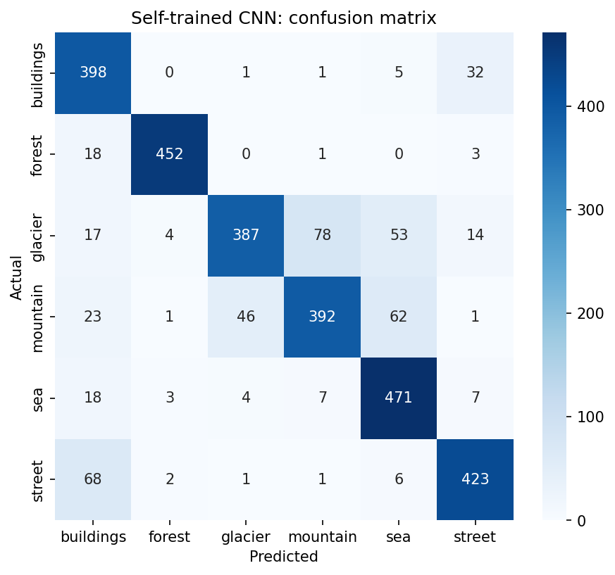
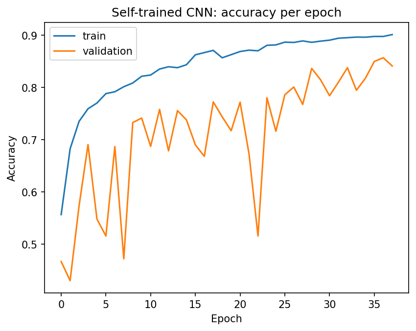

Which landscape is in your photo?
A convolutional neural network, trained from scratch on about 12,000 photos, tells you whether a picture shows one of these six scenes. Upload a photo and see how confident it is.
- buildings
- forest
- glacier
- mountain
- sea
- street
Dataset
- NameIntel Image Classification
- SourceKaggle (secondary dataset)
- Classes6: buildings, forest, glacier, mountain, sea, street
- Image size150 x 150 pixels
- Trainingabout 14,000 photos, 85% train and 15% validation
- Testing3,000 photos the model never saw
- CodeColab notebook in the GitHub repository
- Weightsmodel.keras in the weights folder
Model
- ArchitectureCNN trained from scratch, no pretrained weights
- Blocks4 blocks (32, 64, 128, 256 filters), each with two 3x3 convolutions, batch normalisation, ReLU and max pooling
- HeadGlobal average pooling, dropout 0.4, dense 128, dropout 0.3, 6-way softmax
- AugmentationHorizontal flip, rotation, zoom
- Run 118 epochs, learning rate 1e-3, early stopping
- Run 220 more epochs, learning rate 3e-4 with automatic reduction
- ComparisonA pretrained MobileNetV2 scored 90.4% on the same test photos
- HostingModel runs on a Hugging Face Space; this site calls it
Results on the test set
84.1%
accuracy on 3,000 unseen photos (test loss 0.4644)
| Class | Precision | Recall | F1 | Photos |
|---|---|---|---|---|
| buildings | 0.73 | 0.91 | 0.81 | 437 |
| forest | 0.98 | 0.95 | 0.97 | 474 |
| glacier | 0.88 | 0.70 | 0.78 | 553 |
| mountain | 0.82 | 0.75 | 0.78 | 525 |
| sea | 0.79 | 0.92 | 0.85 | 510 |
| street | 0.88 | 0.84 | 0.86 | 501 |
Forest is the easiest class. Glacier and mountain are the hardest because snowy peaks look alike. A pretrained MobileNetV2 scored 90.4% on the same photos, while this model learns everything from random weights.

